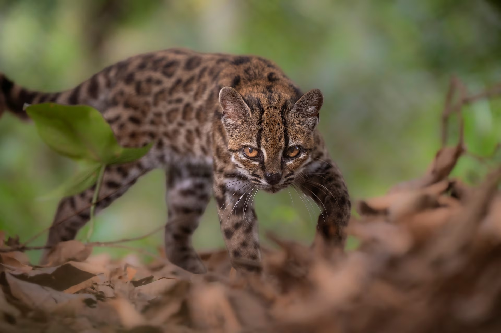
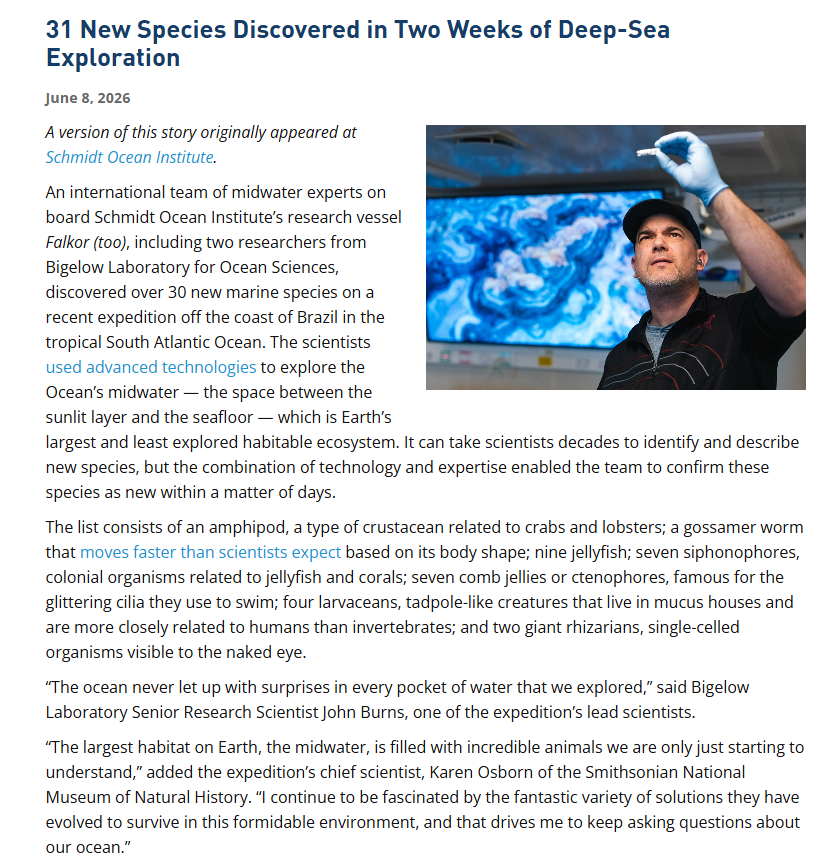

WORLD PATCH NOTES
地球
ONLINE
這是一個規模不大的版本，
但每一項，都是重大更新。
貓咪模組：
Tilcayo
兇猛與可愛並存。第一款全新貓科外觀已在玻利維亞雲霧森林解鎖。

我們發現玩家對貓咪寵物的需求持續增加，因此優先釋出全新貓科模組。若反應良好，寵物系統將繼續擴充。
這並非把幾種貓「人工混合」而成。研究團隊比較了 38 隻南美虎貓的全基因組資料，發現原本被歸作同一群的虎貓其實包含五個主要演化譜系。新物種 Leopardus tilcayo 約重 1.4 公斤、身長約 46 公分，淺褐色皮毛配上大型不規則玫瑰斑；其譜系約在 140 萬年前分化，基因亦留下與 Geoffroy's cat 古代雜交的痕跡。
- 38
- 基因樣本
- 5
- 主要譜系
- 1.4M
- 年前分化
- 1.4KG
- 成年體重
火星未開放。
海洋還未探索完。
催促新地圖之前，請先看看你腳下那個仍未全亮的巨大區域。
我們知道大家一直要求新增火星地圖。但新地圖需要時間，而地球最大的棲息地——海洋中層——至今仍有大量區域未解鎖。
在巴西外海的一次兩週遠征中，研究團隊利用水下機械人、雷射成像、活體顯微觀察與基因分析，確認了 31 種新海洋生物：包括 9 種水母、7 種管水母、7 種櫛水母、4 種尾海鞘、1 種端足類、1 種游絲蟲，以及 2 種肉眼可見的巨型單細胞放射蟲。
開發者提示：在催促火星 DLC 前，建議先完成「全地圖探索」成就。

初始天賦，
現在可以篩選。
角色創建系統開始有限度開放；目前能避開部分高難度遺傳疾病副本，但不是自由捏臉，也不是改寫角色代碼。
透過 IVF 配合胚胎植入前遺傳學檢測（PGT），醫療團隊可檢查胚胎是否帶有某些單基因疾病、染色體結構問題，或特定情況下的染色體數目異常。
這是篩選現有胚胎，並不是修改基因，也不能挑選智力、性格、外貌或「職業」。在香港，非醫療目的的胚胎性別選擇受法律限制；只有為避免伴性遺傳疾病等特定醫療原因時才可能獲准。決策權現階段由準父母與醫療團隊共同承擔——被創建的角色自然暫時無法參與。
關於近期「性別系統異常」的投訴
經程序員檢查，目前未發現性別資料庫存在重大漏洞。近期混亂主要來自玩家把生理性別、性別認同與網上自我描述混為一談，以及言語攻擊功能遭到濫用。
我們不會把任何玩家的身份視為系統錯誤；同時，假冒資料、騷擾及針對他人的言語攻擊亦不是新功能。短期內 Planet 會聚焦科技樹開發，性別系統不作機制更改。請辨認資料來源，也請停止把其他玩家當作 Bug。